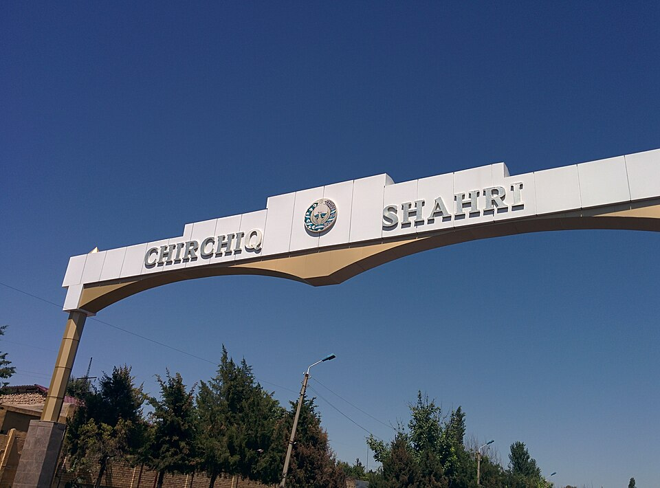

Чирчик
Мой родной город.

Въездная арка на дороге из Ташкента
Чем известен
- Промышленный центр — химкомбинат и каскад ГЭС
- Назван по реке Чирчик — «шумная»
- 30 км от Ташкента, у подножия гор
- Около 170 000 жителей, многонациональный
Моё портфолио